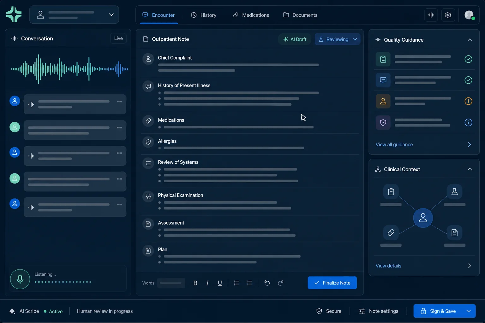
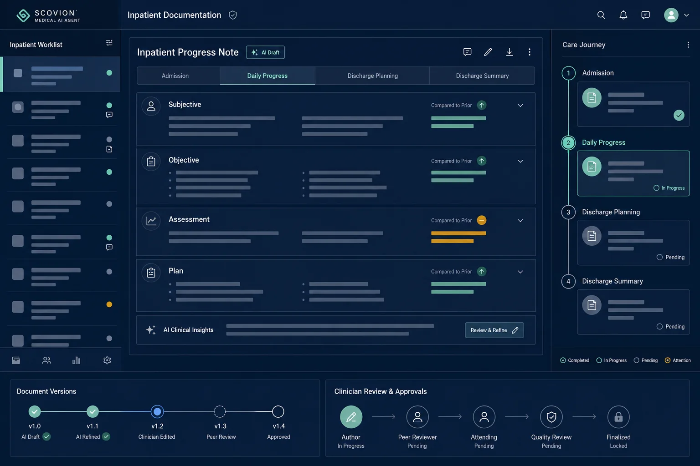
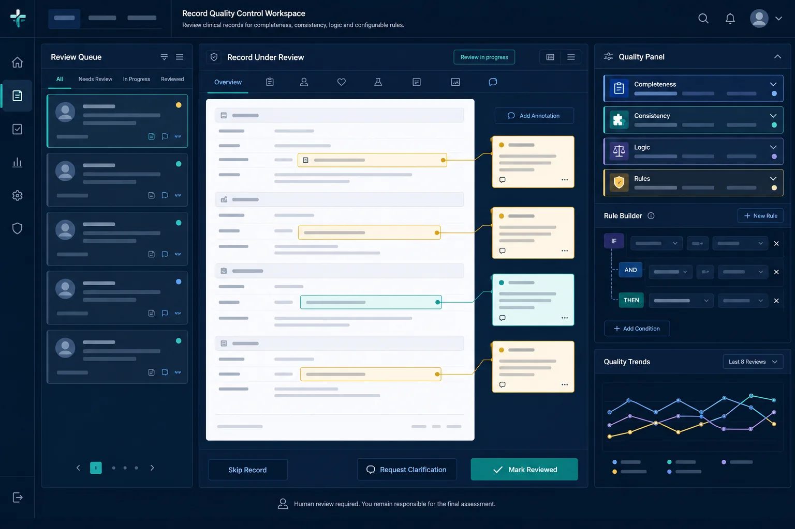
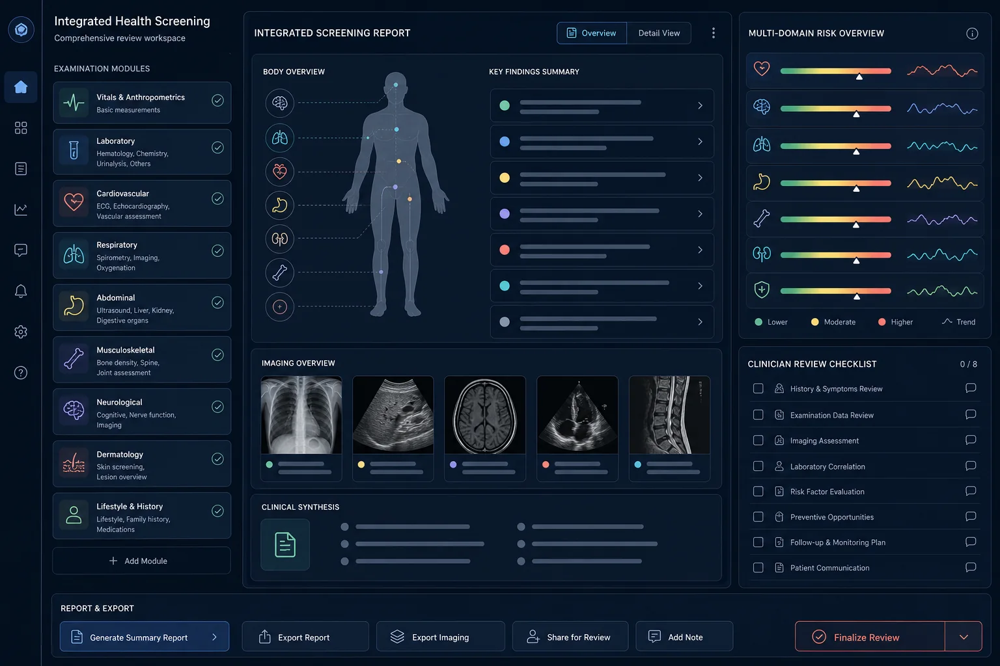

01
Local deployment
Medical AI Agent
Combines multimodal medical models with local computing to support voice documentation, structured record generation, content quality checks, decision support and integrated health reports.
Explore solutionA locally deployed multimodal AI platform supports clinical documentation, record quality, decision assistance and health screening without moving core workflows away from the hospital.
On-premise deployment keeps supported clinical data inside the hospital environment while giving teams a modular foundation that can grow with usage.
Combines multimodal medical models with local computing to support voice documentation, structured record generation, content quality checks, decision support and integrated health reports.
Explore solution
Generates structured outpatient records from clinical conversations, supports pre-consultation data, real-time quality checks and common-disease decision assistance.

Supports documentation throughout the admission cycle, including first progress notes, daily notes and discharge records.

Checks outpatient, emergency and inpatient records for completeness, consistency, logic, compliance and clinical appropriateness.

Combines examination data into structured health reports and links imaging findings into an integrated risk view.
We can review deployment boundaries, supported scenarios, infrastructure and a practical path from pilot to everyday use.